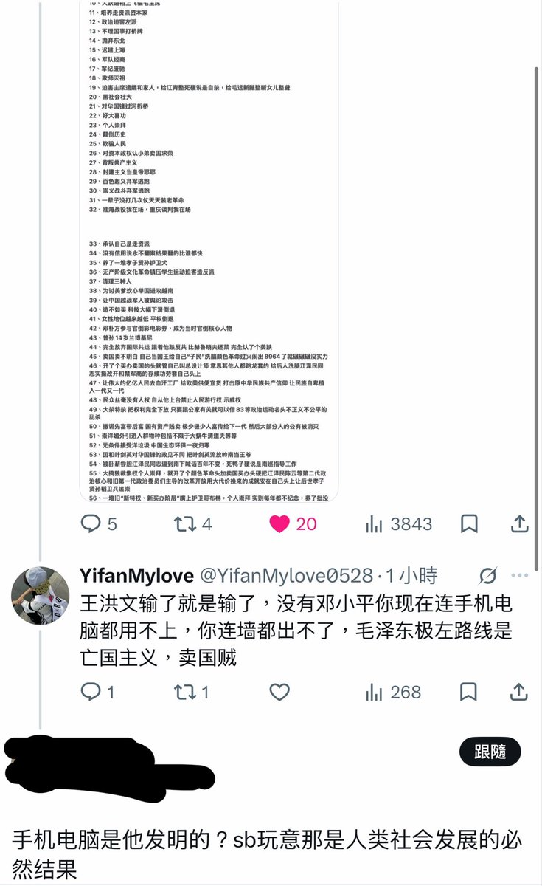

ASHES
@Victor_zhang233
@MeiyiSama 什么？这不是走资，我们这个邓小平理论体积小方便携带，拆开一包，放水里就会摸石头过河，一戳就破，用来擦脚，擦脸，擦嘴都是很好用的，你看打开以后像茅台一样大小，放在小渔村里画圈就会变富，吸钱性很强的。

王洪文
@MeiyiSama
看来以后邓碾平伟大个人崇拜✌🏻👴前面还要加上总发明师总设计师未获诺奖的科学家
邓碾平死了就是死了 骨灰洒太平洋了 没有什么死后去找天皇和孙中山和哈耶克 就是死了 死的很惨
没有邓小平你血汗工厂国内都没有也进不去，你连墙都没有签证都不用办，邓碾平极右封建特权路线是亡族主义，卖国汉奸 https://t.co/xIc4lSBpaZ